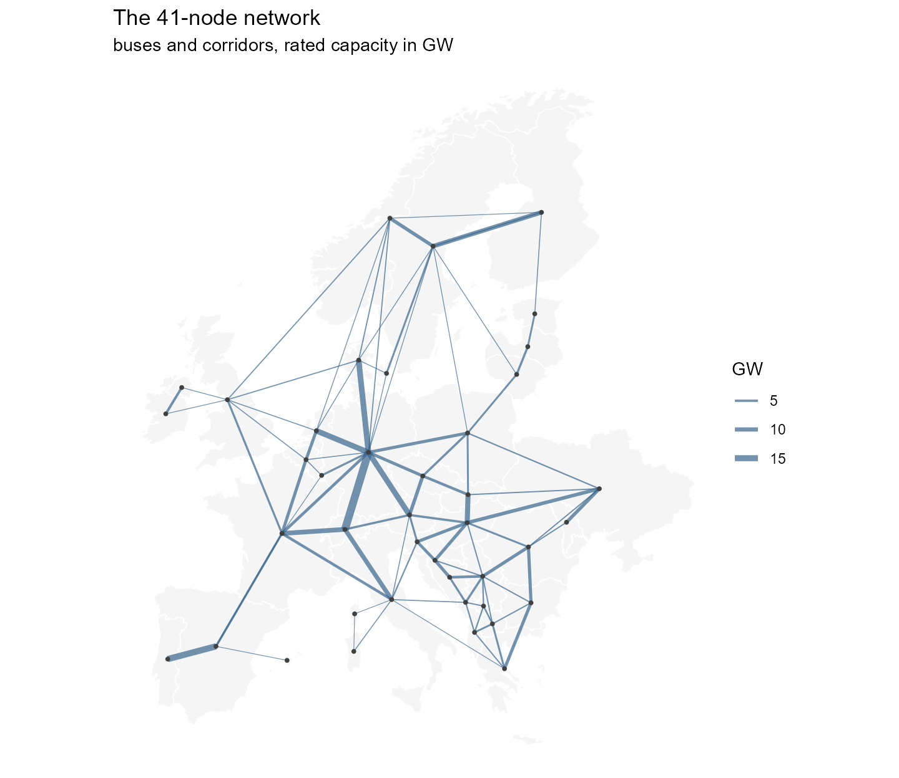
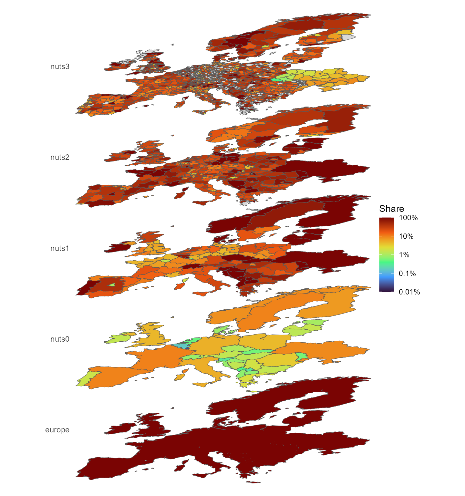

vignette("data") walks through the shipped data
— the models, the region hierarchy, and how values aggregate. This
article looks one step upstream: the sources those objects are built
from, what each one looks like, and what it becomes in the shipped
models. The heavy inputs (a 6.7 GB weather cutout, a PyPSA-Eur clone) do
not ship, so their figures are pre-rendered by
data-raw/data_sources_figures.R and committed; everything
drawn from shipped data is computed live on this page.
1. Weather: the cutout
Wind and solar availability come from one file: the cutout
europe-2025-sarah3-era5.nc — a 0.3° grid over Europe (177 ×
131 cells) with 8,760 hourly fields of wind speed, solar irradiance,
temperature and runoff for 2025. PyPSA-Eur turns it into per-region
hourly capacity factors; those arrive in the models as the
weather objects (W_ONWIND,
W_SOLAR, …).


Both sources are CC-BY: ERA5 from the Copernicus Climate Change
Service, SARAH-3 from EUMETSAT CM SAF. The exact notices ship in
system.file("LICENSE.note", package = "reneuro").
2. Demand: measured ENTSO-E series
Hourly national load for 2025 comes from the ENTSO-E transparency
platform (with NESO for Great Britain). It lands in the models as each
region’s demand, distributed below country level by a
GDP/population proxy.

The 2025 total across the modelled countries is 3,163 TWh — visible in the shipped models as the sum over the demand objects:
3. The existing fleet
Power plants come from powerplantmatching,
which deduplicates GEM, JRC, ENTSO-E, GPD and other registries into one
unit list — 157,549 units with coordinates and capacities. In the models
they become the non-extendable stock (nuclear, coal, hydro,
…) and the cap.lo floors on extendable carriers (wind,
solar); in the pypsa_eur_41_<year> horizon series
they also drive retirement, through announced closure dates where they
exist and assumed lifetimes elsewhere.

4. The network
Transmission comes from OpenStreetMap (which is what makes the
shipped data ODbL): substations and lines, simplified and clustered by
PyPSA-Eur. In the models it is the trade corridors. Drawn
from shipped data:
library(ggplot2)
gs <- pypsa_eur_41_gs
geo <- geoscales::geoscale_geometry(gs, "bus")
ctr <- suppressWarnings(sf::st_centroid(geo))
xy <- as.data.frame(sf::st_coordinates(ctr))
xy$bus <- geo$bus
tr <- objs[vapply(objs, function(o) class(o)[1], "") == "trade"]
routes <- unique(do.call(rbind, lapply(tr, function(t)
cbind(t@routes[1, , drop = FALSE],
MW = t@capacity$stock[1] %||% t@capacity$cap.lo[1]))))
seg <- routes |>
left_join(xy, by = c(src = "bus")) |>
rename(x0 = X, y0 = Y) |>
left_join(xy, by = c(dst = "bus")) |>
rename(x1 = X, y1 = Y)
ggplot() +
geom_sf(data = geo, fill = "grey96", colour = "white", linewidth = 0.3) +
geom_segment(data = seg, aes(x0, y0, xend = x1, yend = y1,
linewidth = MW / 1e3),
colour = "steelblue4", alpha = 0.7) +
geom_point(data = xy, aes(X, Y), size = 0.7, colour = "grey25") +
scale_linewidth(range = c(0.2, 2.2)) +
labs(title = "The 41-node network",
subtitle = "buses and corridors, rated capacity in GW",
linewidth = "GW") +
theme_void() +
theme(plot.background = element_rect(fill = "white", colour = NA))
5. Regional attributes
Population, GDP, demand shares and renewable potentials ride on
nuts_gs, computed by PyPSA-Eur on the NUTS3 polygons. The
stack view shows one of them across every level at once — here each
region’s share of the onshore wind potential within its parent, on the
fixed log scale:
lt <- as.data.frame(geoscales::geoscale_leaftable(nuts_gs))
energyRt::plot_geoscale(nuts_gs, type = "stack", direction = "down",
view = "oblique",
data = lt[, c("nuts3", "pot_onwind")],
z = "pot_onwind", rule = "logshare")
#> Warning in ggplot2::scale_fill_viridis_c(option = palette, transform = "log10", : log-10 transformation introduced infinite values.
#> log-10 transformation introduced infinite values.
#> log-10 transformation introduced infinite values.
6. Sources at a glance
| source | licence | vintage | becomes |
|---|---|---|---|
| ERA5 (Copernicus C3S) | CC-BY | 2025 hourly | wind / hydro / temperature profiles → weather
objects |
| SARAH-3 (EUMETSAT CM SAF) | CC-BY | 2025 hourly | solar profiles → weather objects |
| ENTSO-E transparency (+ NESO for GB) | open re-use | 2025 hourly | national load → demand
|
| powerplantmatching | GPL-3 code, mixed open registries | through 2024 | fleet → stock, cap.lo floors, retirement
in the horizon series |
| OpenStreetMap (+ TYNDP projects) | ODbL | 2026 extract | grid → trade corridors (the reason the data licence is
ODbL) |
| NUTS / JRC / Eurostat layers | EU open licences | mixed | region geometry + attributes → nuts_gs
|
| technology-data v0.14.0 | CC-BY | 2020–2050 in 5-year steps | costs → invcost / varom / supply
prices |
What is not here: the World Database on Protected Areas
(non-redistributable; excluded, with the effect documented in
LICENSE.note) and the OPSD demand series (replaced by the
2025 ENTSO-E pull).